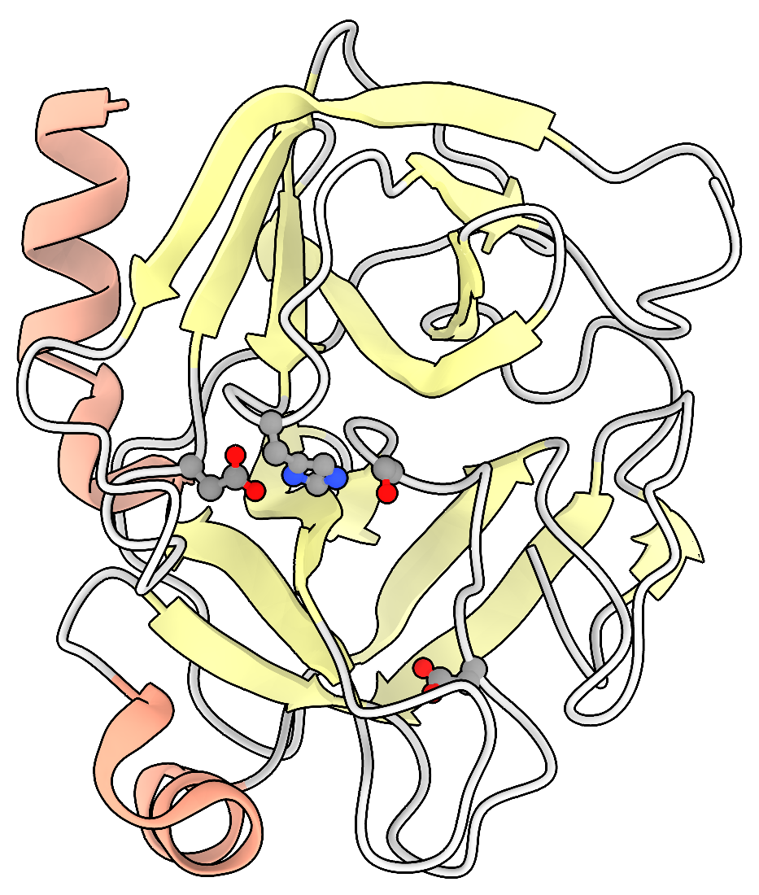
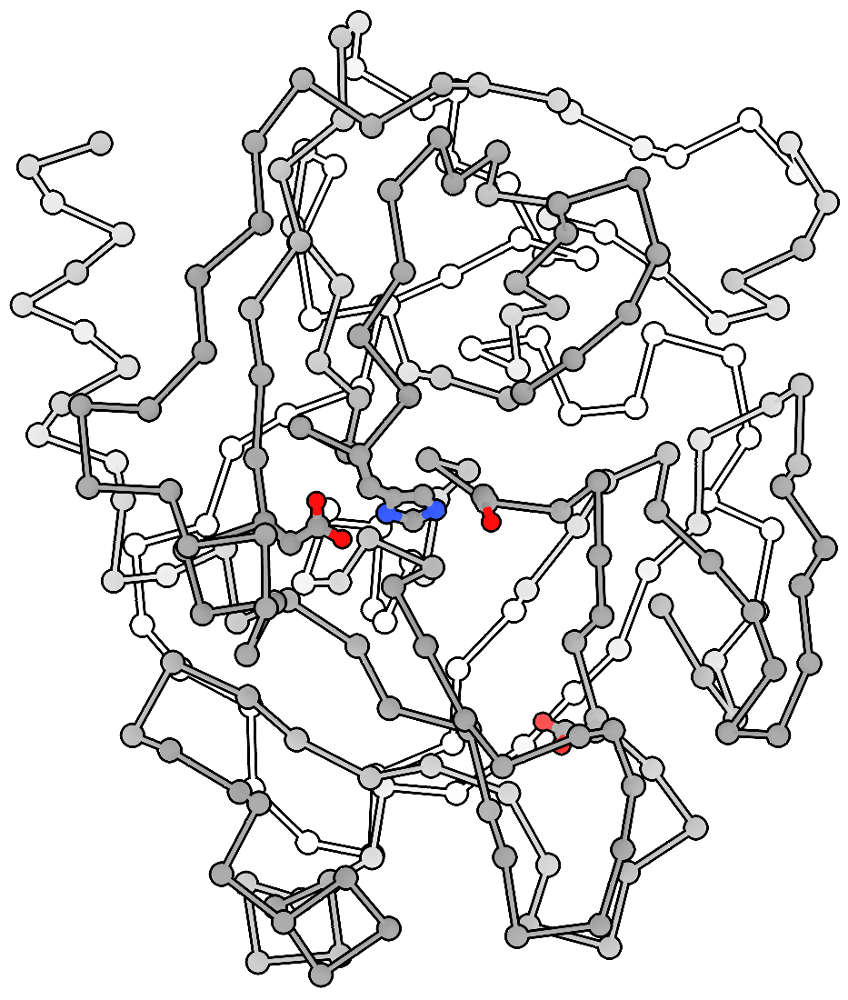

Trypsin Visualization#
This notebook provides the instructions and code to produce the corresponding figure presented in the textbook. Any figure made using Python or command-line tools will be described in a notebook like this one. These notebooks are provided so I can remember how to create these images and visualizations and speed up my work when returning to this project after a period of time. They will also provide templates for you, the student, to use should you wish to make your own version.
Trypsin#
Trypsin is a very famous protein and will be discussed in more detail later in the course. More information about Trypsin is accessible at…
https://enzyme.expasy.org/EC/3.4.21.4
https://www.brenda-enzymes.org/enzyme.php?ecno=3.4.21.4
https://doi.org/10.2210/pdb2PTN/pdb
https://www.ebi.ac.uk/thornton-srv/m-csa/entry/173/
E.S. Radisky, J.M. Lee, C.K. Lu, & D.E. Koshland, “Insights into the serine protease mechanism from atomic resolution structures of trypsin reaction intermediates”, Proc. Natl. Acad. Sci. U.S.A., 2006, 103, 6835-6840, https://doi.org/10.1073/pnas.0601910103.
F. Hofer, J. Kraml, U. Kahler, A.S. Kamenik, and K.R. Liedl. “Catalytic Site pKa Values of Aspartic, Cysteine, and Serine Proteases: Constant pH MD Simulations.” Journal of Chemical Information and Modeling, 2020, 60, 3030-3042. https://doi.org/10.1021/acs.jcim.0c00190
https://www.ebi.ac.uk/merops/
Visualization#
I wanted to make a visualization that related to the famous 1974 Geis image.
A quick and easy visualization can be achieved using py3Dmol. The code below will give an interactive widget with the structure. use your mouse to move it around.
Show code cell source
# see settings described at https://www.insilicochemistry.io/tutorials/foundations/chemistry-visualization-with-py3dmol
import py3Dmol
options={
'backgroundColor': 'white',
# Global lighting
'light': True,
'ambient': 0.4,
'diffuse': 0.6,
'specular': 0.1,
'shininess': 15,
}
colorscheme = {
'prop': 'ss',
'map': {
'h': 'red', # helix
's': 'yellow', # sheet
'c': '#FFFFFF' # coil / loop
}
}
cartoonstyle = {
'arrows':False, # arrows are not supported properly in py3Dmol. Won't color the arrowhead.
'tubes':False,
'style':'oval', # 'trace', 'oval' NOTE: 'ribbon' is not supported properlyin py3Dmol
# 'thickness': 0.5,
'colorscheme': colorscheme,
'opacity': 1.0,
}
view = py3Dmol.view(query='pdb:2ptn',
width=600,
height=400,
options=options, # set the options for the viewer
linked=True, viewergrid=(1,2), # link the two viewers in the grid (1 row, 2 columns
)
# select with 'resi', 'chain', 'atom', 'element', 'model',
# style with 'stick', 'sphere', 'cartoon', 'line', 'cross',
# Color by secondary structure
view.setStyle({},{
'cartoon': cartoonstyle,
}
)
#view.addStyle(
# {'model':0,'chain': 'A', 'resn':['PHE'],
# 'not':{'atom': ['N', 'C', 'O']},
## 'invert': True,
# },
# {
# 'stick': {'colorscheme': 'element', 'radius': 0.2},
# 'sphere': {'colorscheme': 'element', 'scale': 0.3}
# }
#)
view.addStyle(
{'model':0,'chain': 'A', 'resi':[195, 57, 102, 189],
'not':{'atom': ['N', 'C', 'O']},
# 'invert': True,
},
{
'stick': {'colorscheme': 'element', 'radius': 0.2},
'sphere': {'colorscheme': 'element', 'scale': 0.3}
}
, viewer=(0,0)
)
view.addStyle(
{'model':0,'chain': 'A', 'resi':[195, 57, 102, 189],
'not':{'atom': ['N', 'C', 'O']},
# 'invert': True,
},
{
'stick': {'colorscheme': 'element', 'radius': 0.2},
'sphere': {'colorscheme': 'element', 'scale': 1}
}
, viewer=(0,1)
)
'''option for addSurface are
py3Dmol.VDW # van der Waals surface
py3Dmol.MS # molecular surface (Connolly)
py3Dmol.SAS # solvent-accessible surface
py3Dmol.SES # solvent-excluded surface
'''
view.addSurface(
py3Dmol.MS ,
{'opacity': 0.9, 'color': 'white'},{'model':0,'chain': 'A','not':{'resn':['HOH']}},viewer=(0,1))
view.setViewStyle({'style':'outline','color':'black','width':0.1})
# does not work
# view.addStyle({'sidechain': True}, {'stick': {'colorscheme': 'blueCarbon'}})
if True:
view.rotate(95, 'x') # x-axis is horizontal, pointing to the right. Front rolls down
#view.rotate(180, 'z') # z-axis vertical, pointing up. Front rolls right
view.rotate(180, 'y') # y-axis is is pointing out of the screen, towards the viewer. Turns counterclockwise
view.setBackgroundColor ('#f9f9f9', viewer=(0,0))
view.setBackgroundColor('#f9f9f9', viewer=(0,1))
view.zoomTo()
view.zoom(0.8)
#
view.show()
3Dmol.js failed to load for some reason. Please check your browser console for error messages.
UCSF Chimera#
I prefer to use UCSF Chimera for my own images. I used the same data set as was presented in David Goodsell’s essay.
I downloaded the data file as data/2ptn.cif. I then used the following commands to open the file and style the image. You can run the commands as a script file using 2PTN.cxc.
Click to see the Chimera commands
open 2ptn.cif
camera ortho
set bgColor white
# hide atoms
hide
# show cartoon (ribbons) visualization
cartoon
# color ribbons by secondary structure
color /a lightgrey target r
color /a & strand rgb(255,255,153) target r
color /a & helix rgb(255,163,135) target r
# show atoms in residues 189 (pocket) and 57, 102, 195 (the catalytic triad)
show :189
show :57, 102, 195
# atoms shown in ball-and-stick style
style ball
size ballScale +0.07
# atoms colored using CPK colors
color byelement
# style commands
graphics silhouettes true color black width 3 depthJump 0.02
lighting gentle
lighting depthCue true depthCueColor white depthCueStart 0.4 depthCueEnd 1
# set the view angle
turn x 90
turn z 175
zoom 0.7
# save 2ptn.png supersample 4 transparentBackground true
The image was then cropped to produce the final visualization.
{kind=link}

Figure 3 A modern style for presenting protein structure#
Reproducing Geis#
using a slightly different set of commands I can show a trace of the \(\alpha\)-carbons (the center backbone carbon of each amino acid). Use data/2ptn_trace.cxc
Click to see the Chimera commands
close
open 2ptn.cif
camera ortho
set bgColor white
# hide atoms
hide
# hide cartoon (ribbons) visualization
cartoon
hide ribbons
# show alpha carbons
show @CA
# hide calcium ion
hide :ca
# color ribbons by secondary structure
color lightgrey target a
color strand rgb(255,255,153) target a
color helix rgb(255,163,135) target a
# show atoms in residues 189 (pocket) and 57, 102, 195 (the catalytic triad)
show :189
hide :189@C,N,O
show :57, 102, 195
hide :57,102,195@C,N,O
# atoms shown in ball-and-stick style
style ball
size ballScale -0
# atoms colored using CPK colors
color byelement
# style commands
graphics silhouettes true color black width 3 depthJump 0.02
lighting gentle
lighting depthCue true depthCueColor white depthCueStart 0.4 depthCueEnd 0.6
turn x 90
turn z 175
zoom 0.7
# save 2ptn_trace.png supersample 4 transparentBackground true
{kind=link}

Figure 4 Presenting the structure of Trypsin in the style of Geis#
Compare this to the image by Geis himself.